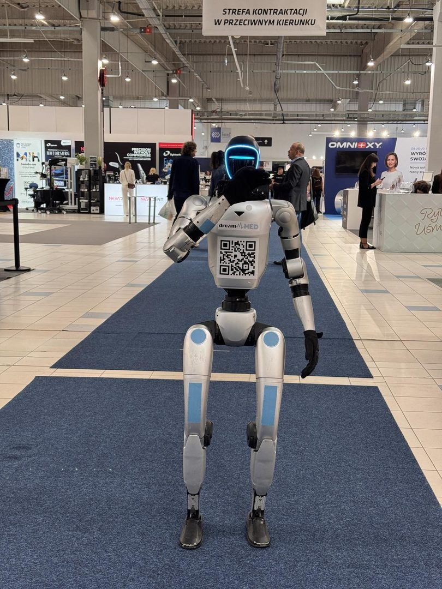

- Startseite
- Messe-Roboter mieten
Messe-Roboter mieten · Österreich
Messe-Roboter mieten
Der Unitree G1 spricht Besucher im Gang an und bringt sie zu Ihrem Standteam. Auf jeder Messe in Österreich, mit Operator und Branding.

Auf einer Messe gehen Besucher an vielen Ständen vorbei und bleiben dort stehen, wo etwas passiert. Der Unitree G1 arbeitet deshalb an der Kante zum Gang: Er spricht Vorbeigehende an, gibt die Hand, posiert für ein Foto und übergibt an Ihr Standteam.
Drei Aufgaben am Stand
Ansprechen
Der Roboter geht auf Besucher zu und begrüßt sie mit Geste und Stimme, auf Deutsch und in jeder anderen Sprache. Wer stehen bleibt, zückt meist das Handy.
Erklären
Vor der Messe bekommt der Roboter Wissen über Ihr Unternehmen, Ihre Produkte und die Fragen, die Besucher häufig stellen. Der QR-Code auf seiner Brust führt dorthin, wo Sie Besucher haben wollen.
Übergeben
Für das Fachgespräch bringt der Roboter Besucher zu Ihrem Team. Der Operator achtet darauf, dass sich vor dem Stand keine Traube bildet, die den Gang blockiert.
Ein Messetag mit Roboter
| Phase | Was passiert |
|---|---|
| Vor Hallenöffnung | Position an der Gangkante festlegen, Gehen auf dem Standboden testen, Texte mit dem Standteam durchgehen. |
| Hallenöffnung | Begrüßung der ersten Besucher, erste Fotos. |
| Vormittag | Ansprache im Gang, Antworten auf Fragen, Übergabe an das Team. |
| Mittag | Technische Pause und Akkuwechsel. |
| Nachmittag | Kurze Choreografie zu festen Zeiten, dazwischen Fotos und Gespräche. |
| Nach Messeschluss | Abbau, abgestimmt mit Ihrem Standbauer. |
Der Operator legt die Einsätze so, dass am Stand Betrieb ist, wenn die Gänge voll sind.
Was der Stand braucht
- Fläche. Einige Quadratmeter ebener Boden an der Kante zum Gang.
- Strom. Eine normale Steckdose am Stand.
- Logo. Als Vektordatei, dazu die Adresse für den QR-Code.
- Informationen. Produkte, Neuheiten und die Fragen, auf die der Roboter antworten soll.
Einsätze auf Messen
- Rekord-Gruppe, Messe MSPO in Kielce, 8.–9. September 2026. Zwei Messetage am Stand 3Z-05. Der Roboter stellte nacheinander alle Gesellschaften der Gruppe vor und lud Besucher im Gang zur Vorführung am Stand ein.
- Matys Development, Immobilienmesse in Stettin. Der Roboter stand am Stand des Bauträgers, mit Unterlagen zum Projekt Silver Garden.
- Dream-Med, Warsaw Medical Expo 2026. Der Roboter arbeitete am Stand des Ausstellers.


Messen in Österreich: wo sich ein Roboter anbietet
Wir kommen auf jedes Messegelände in Österreich. Für die fünf größten Messeplätze haben wir beschrieben, welche Aufgabe der Roboter dort übernehmen kann:
- Wien — Messe Wien im Prater und Austria Center Vienna: Fachmessen, Publikumsmessen und internationale Kongresse.
- Graz — Messe Congress Graz mit Stadthalle: Fachmessen und die Grazer Herbstmesse.
- Salzburg — Messezentrum Salzburg, unter anderem mit der Gastronomiefachmesse „Alles für den Gast“.
- Linz — Design Center Linz: Industrie- und Automatisierungsmessen.
- Innsbruck — Messe Innsbruck: Fachmessen für Alpintechnik, Gastronomie und Hotellerie.
Auch die Messe Wels, die Messe Dornbirn und das Messegelände Klagenfurt erreichen wir ohne Aufschlag. Auf- und Abbau erfolgen vor Messebeginn und nach Messeschluss, abgestimmt mit Ihrem Standbauer. Bei mehrtägigen Messen gibt es ab zwei Tagen 15 % Rabatt auf jeden Tag. Was zwei, drei oder vier Messetage kosten, steht unter Preise.
Was in der Messe-Miete enthalten ist
- Unitree G1 mit Operator während der gesamten Standzeit
- Transport auf jedes Messegelände in Österreich
- Branding mit Logo und QR-Code
- Vorbereitung der Texte und des Wissens über Ihr Angebot
- Haftpflichtversicherung und Ersatzakkus
Was der Roboter am Stand nicht macht
- Er führt kein Fachgespräch bis zum Abschluss. Dafür übergibt er an Ihr Team.
- Er arbeitet nicht ohne Pausen. Die Pausen legen wir in ruhige Zeiten.
- Er bleibt nie ohne Operator. Der Operator ist während der gesamten Standzeit bei ihm.
- Er führt im Hallenlärm keine langen freien Gespräche. Für Ansagen und Präsentationen arbeiten wir mit vorbereiteten Texten.
Planen Sie neben der Messe einen Kongress oder einen Abendempfang, lesen Sie weiter bei Kongress, Gala und Ball. Termin und Preis anfragen
Häufige Fragen
Ein Messetag kostet ab 2.300 € netto. Ab zwei Tagen gibt es 15 % Rabatt auf jeden Tag: zwei Tage ab 3.910 €, drei Tage ab 5.865 € netto. Operator, Transport und Branding sind enthalten.
Einige Quadratmeter ebene Fläche an der Kante zum Gang und eine normale Steckdose. Der G1 ist 132 cm groß und passt auch auf einen Reihenstand.
Ja. Ihr Logo und ein QR-Code sitzen auf der Brust des Roboters. Das Branding ist im Preis enthalten.
Ja. Vor der Messe spielen wir ihm Wissen über Ihr Unternehmen, Ihr Angebot und häufige Fragen ein. Für das Fachgespräch übergibt er an Ihr Standteam.
Ja. Der Roboter spricht Deutsch und jede andere Sprache und wechselt während der Messe.